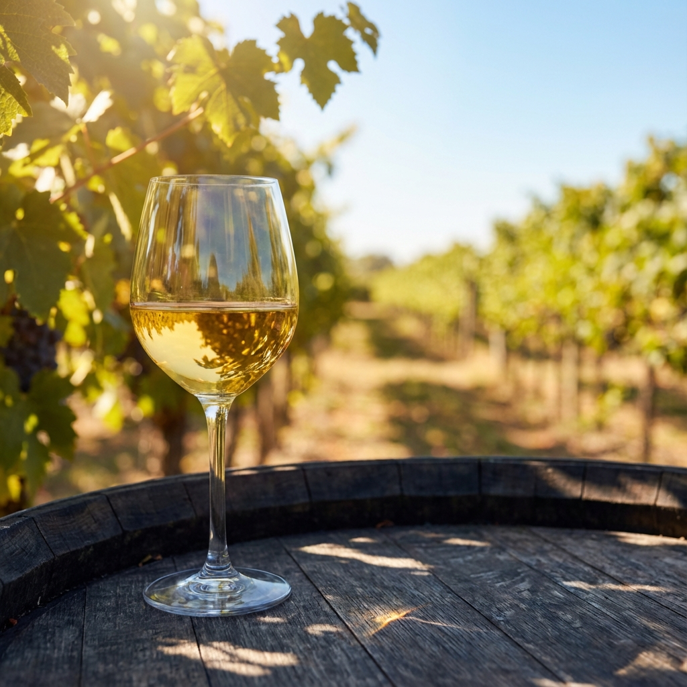
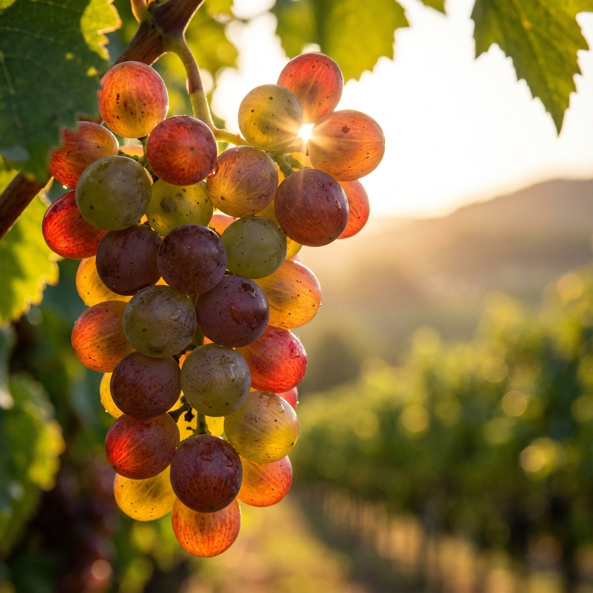

Rodinné vinárstvo zo Šenkvíc
Tradícia, ktorá chutí. Vína robené s láskou a úctou k prírode.
Ochutnajte naše vínaVitajte u Bočkovcov
Naše rodinné vinárstvo sme založili v apríli 1991, avšak výrobe vína a pestovaniu viniča sa v našej rodine venujeme už niekoľko generácií. Základom našej práce je vinohrad a poctivý prístup.
Náš príbeh
Náš príbeh
Rodinná tradícia zo Šenkvíc
Od koreňov k vínu
Naše rodinné vinárstvo sme založili v apríli 1991. Avšak výrobe vína a pestovaniu viniča sa venuje v našej rodine už niekoľko generácií. Ja osobne už viac ako 40 rokov.
Volám sa Marián Bočko a pochádzam zo sedliackej rodiny, z maminej i otcovej strany. Moji starí rodičia žili v Šenkviciach a okrem iného sa venovali aj pestovaniu viniča a výrobe vína. Od detstva som sa teda stretával s hroznom a videl, ako dedo dorába víno v pivnici pod chalupou.
Táto láska k pôde a remeslu sa preniesla aj na mňa. Dnes pokračujeme v tradícii s využitím moderných poznatkov, ale so stále rovnakou úctou k prírode.
Naše vinohrady
Základ našej práce a kvality
Integrovaná produkcia
Základ našej práce je vinohrad. Hrozno na vína máme z vlastných vinohradov, časť z neho aj predávame. Už 15 rokov obrábame cca 9 hektárov viníc na štyroch miestach v Šenkviciach.
Naše vinohrady sú v tzv. integrovanej produkcii. Čo to znamená?
- Nepoužívame žiadne umelé hnojivo.
- Máme mechanickú plečku na obrábanie pôdy.
- Rady viniča máme zatrávnené špeciálnymi bylinami.
- Na ochranu viniča používame len prírodné prípravky, meď a síru (v limitovaných množstvách).
Týmto prístupom chránime nielen prírodu, ale aj zdravie našich zákazníkov. Vďaka vlastnému pestovaniu vieme garantovať aj nízku hladinu histamínu v našich vínach.

Naše vína
Široká paleta chutí zo Šenkvíc
V našom vinárstve nájdete širokú skladbu vín. Od ľahkých aromatických, až po dlhšie vyzrievajúce vína. Pri ich výrobe v plnej miere využívame modernú technológiu – riadené kvasenie, odkalenie, chladenie.
Mladé a svieže biele vína
Mladé vína na rýchlu konzumáciu.
Muškát Ottonel
Ľahké aromatické víno s kvetinovými tónmi.
Sauvignon
Svieže víno s ovocným charakterom.
Veltlínske zelené
Klasika Malokarpatskej oblasti, korenisté a svieže.
Rizling vlašský
Jemné víno s príjemnou kyselinkou.
Müller Thurgau
Ľahké víno na bežné pitie.
Vyzreté biele vína
Vína, ktoré boli v kontakte s drevom a sú určené aj na strednodobú archiváciu.
Tramín červený
Plné, korenisté víno s bohatou aromatikou.
Rizling rýnsky
Kráľ vín, vhodný na dlhšie zrenie.
Silvánske zelené
Tradičná odroda pre Šenkvice, minerálne a plné.
Červené vína
Červené cuvée
Zameriavame sa na dlhodobejšie vyzrievanie červených vín pre dosiahnutie plnosti a harmónie.
Kontakt
Zastavte sa u nás na pohárik
✓ Dotaz bol úspešne odoslaný!
Ďakujeme za vašu správu. Čoskoro sa vám ozveme.
✗ Nastala chyba pri odosielaní
Skúste to prosím znova alebo nás kontaktujte telefonicky.
Telefón
Otváracie hodiny
Degustácie a nákup vína po telefonickom dohovore.
Napíšte nám
Máte záujem o ochutnávku alebo objednávku vína? Napíšte nám.